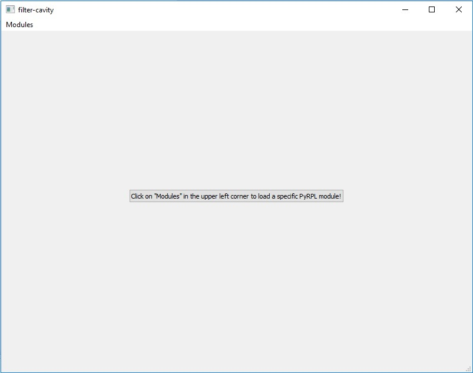
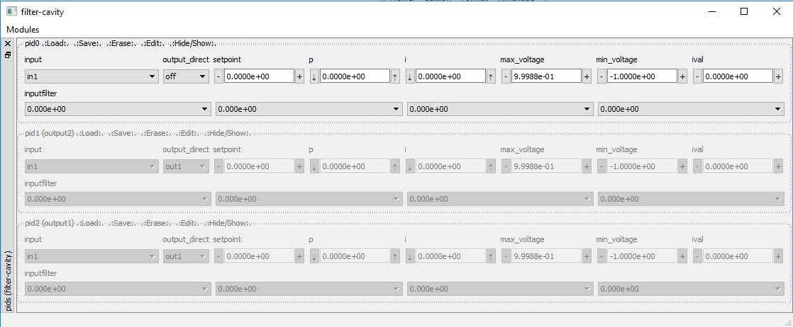
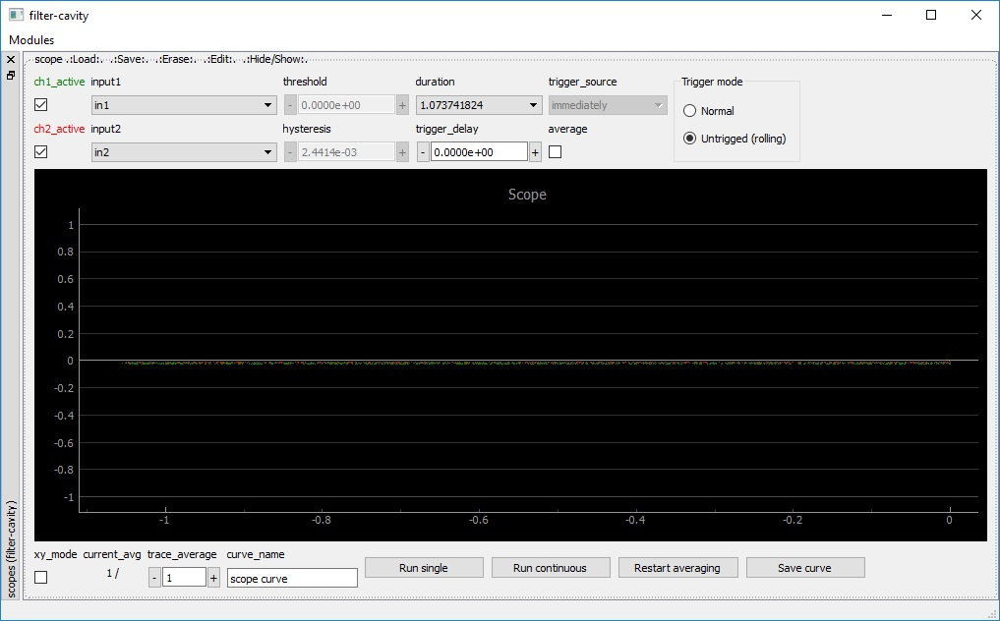
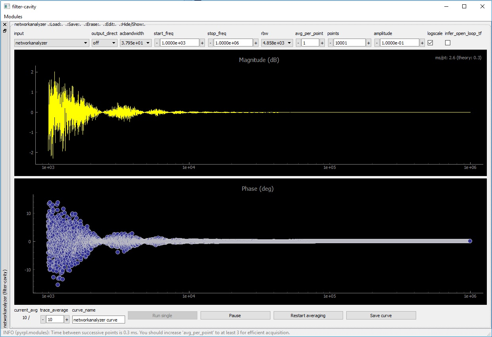
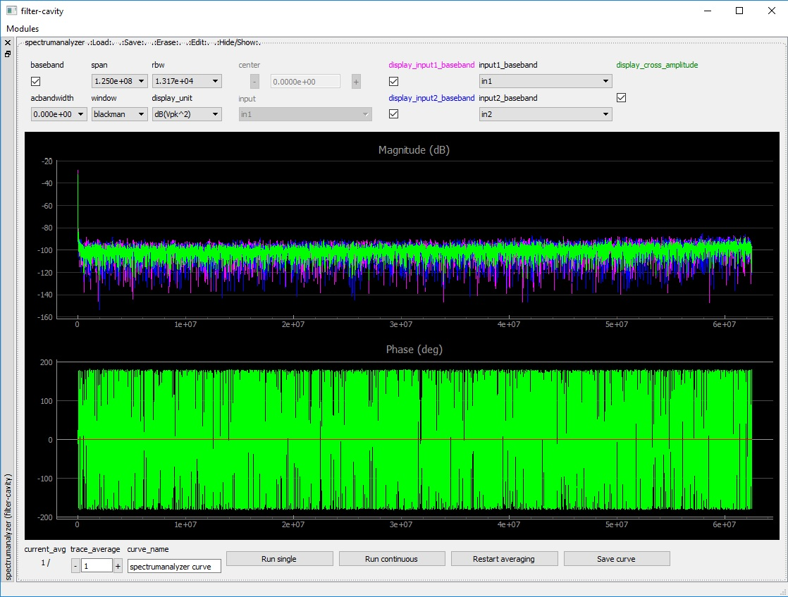
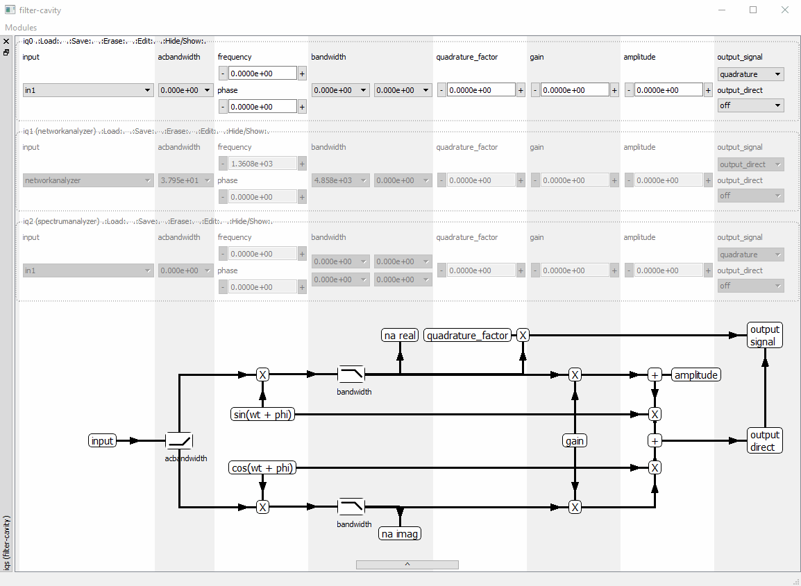
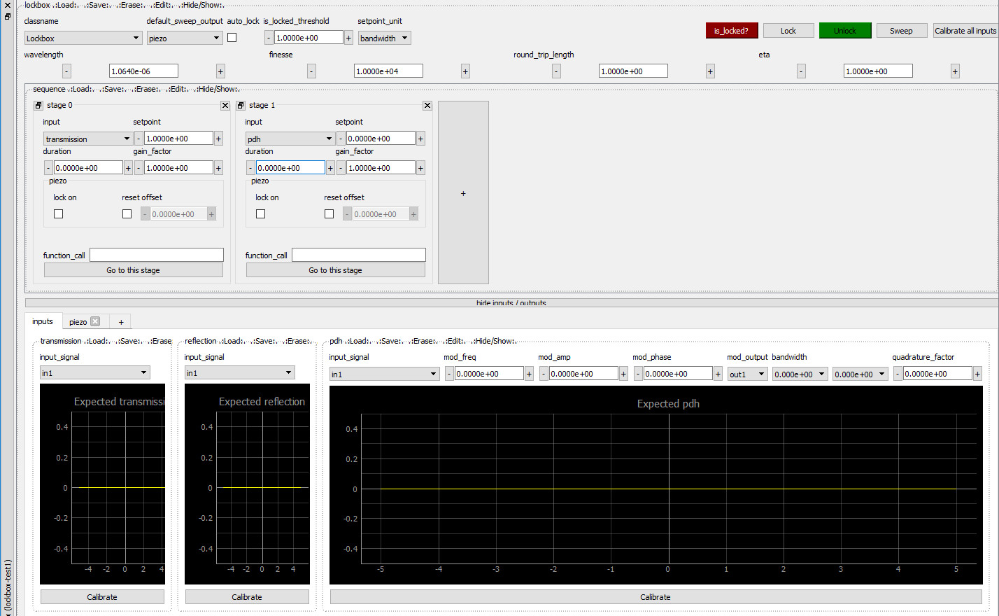

2. GUI instruments manual¶
In this section, we show how to control the main modules of Pyrpl with the Graphical User Interface (GUI).
2.1. Video tutorial¶
Get started by watching the video tutorial below on locking a Michelson interferometer with PyRPL. The video covers:
how to set up the hardware for a typical Red Pitaya use case (interferometer locking)
how to get started by Starting the GUI
how to use the Scope Widget and Arbitrary Signal Generator GUI
how to set up and configure the Lockbox Widget
how to measure a transfer function with the Network Analyzer Widget
2.2. Starting the GUI¶
If you use the Windows or Linux binaries,
just launch the executable and the GUI should start. Passing the command-line
argument --help to the executable shows a list of optional
command-line arguments.
If instead you have a source code installation, then you can either launch PyRPL from a terminal with
python -m pyrpl example_filename
or execute the following code block in Python:
# import pyrpl library
import pyrpl
# create a Pyrpl object and store the configuration in a file 'example_filename.yml'
# by default, the parameter 'gui' is set to True
p = pyrpl.Pyrpl(config='example_filename')
If you are using the file ‘example_filename.yml’ for the first time, a screen will pop-up asking you to choose among the different RedPitayas connected to your local network. After that, the main Pyrpl widget should appear:
{kind=link}

The main pyrpl widget is initially empty, however, you can use the “modules” menu to populate it with module widgets. The module widgets can be closed or reopened at any time, docked/undocked from the main module window by drag-and-drop on their sidebar, and their position on screen will be saved in the config file for the next startup.
We explain the operation of the most useful module widgets in the following sections.
2.3. A typical module widget: PID module¶
The image below shows a typical module widget, here for the PID modules.
{kind=link}

The basic functionality of all module widgets are inherited from the base
class ModuleWidget.
A module widget is delimited by a dashed-line (a QGroupBox). The following
menu is available on the top part of each ModuleWidget, directly behind the
name of the module (e.g. pid0, pid1, …). Right click on
the item (e.g. .:Load:., .:Save:., …) to access the associated
submenu:
.:Load:.Loads the state of the module from a list of previously saved states..:Save:.Saves the current state under a given state name..:Erase:.Erases one of the previously saved states..:Edit:.Opens a text window to edit the yml code of a state..:Hide/Show:.Hides or shows the content of the module widget.
Inside the module widget, different attribute values can be manipulated using
the shown sub-widgets (e.g. input, setpoint, max_voltage, …). The
modifications will take effect immediately. Only the module state
<current state> is affected by these changes. Saving the state under
a different name only preserves the state at the moment of saving for later
retrieval.
At the next startup with the same config file, the :code:<current state> of all modules is loaded.
If a module-widget is grayed out completely, it has been reserved by another,
higher-level module whose name appears in parentheses after the name of the
module (e.g. pid2 (output1) means that the module pid2 is
being used by the module output1, which is actually a submodule of the
lockbox module). You can right-click anywhere on the grayed out
widget and click on “Free” to override that reservation and use the module
for your own purposes.
Warning
If you override a module reservation, the module in parenthesis might stop to function properly. A better practice is to identify the top-level module responsible for the reservation, remove its name from the list in your configuration file (located at /HOME/pyrpl_user_dir/config/<string_shown_in_top_bar_of_the_gui>.yml) and restart PyRPL with that configuration.
2.4. Acquisition Module Widgets¶
Acquisition modules are the modules used to acquire data from the Red Pitaya.
At the moment, they include the
network_analyzer,
All the acquisition modules have in common a plot area where the data is
displayed and a control panel BELOW the plot for changing acquisition
settings. Widgets for specialized acquisition modules
(e.g. Scope) have an additional control
panel ABOVE the plot are for settings that are only available for that module.
The different buttons in the acquisition module control panel below the plot are:
trace_averagechooses the number of successive traces to average together.curve_nameis the name for the next curve that is saved.Run singlestarts a single acquisition oftrace_averagetraces (callsAcquisitionModule.single()).Run continuousstarts a continuous acquisition with a running average filter, wheretrace_averageis the decay constant of the running average filter (callsAcquisitionModule.continuous()).Restart averageresets trace averages to zero to start a new measurement from scratch.Save curvesaves the current measurement data to a newpyrpl.curvedb.CurveDBobject under the namecurve_name.
2.4.1. Scope Widget¶
The scope widget is represented in the image below.
{kind=link}

The control panel above the plotting area allows to manipulate the following
attributes specific to the Scope:
ch1_active/ch2_active: Hide/show the trace corresponding to ch1/ch2.input1/input2: Choose the input among a list of possible signals. Internal signals can be referenced by their symbolic name e.g.lockbox.outputs.output1.threshold: The voltage threshold for the scope trigger.hysteresis: Hysteresis for the scope trigger, i.e. the scope input signal must exceed thethresholdvalue by more than the hysteresis value to generate a trigger event.duration: The full duration of the scope trace to acquire, in units of seconds.trigger_delay: The delay beteween trigger event and the center of the trace.trigger_source: The channel to use as trigger input.average: Enables “averaging” a.k.a. “high-resolution” mode, which averages all data samples acquired at the full sampling rate between two successive points of the trace. If disabled, only a sample of the full-rate signal is shown as the trace. The averaging mode corresponds to a moving-average filter with a cutoff frequency ofsampling_time\(^{-1} = 2^{14}/\mathrm{duration}\) in units of Hz.xy_mode: If selected, channel 2 is plotted as a function of channel 1 (instead of channels 1 and 2 as a function of time).Trigger mode(internally represented byrolling_mode):Normalis used for triggered acquisition.Untriggered (rolling)is used for continuous acquisition without requiring a trigger signal, where the traces “roll” through the plotting area from right to left in real-time. The rolling mode does not allow for trace averaging nor durations below 0.1 s.
2.4.2. Network Analyzer Widget¶
The network analyzer widget is represented in the image below.
{kind=link}

The network analyzer records the coherent response of the signal at the port
input to a sinusoidal excitation of variable frequency sent to the
output selected in output_direct.
Note
If output_direct='off', another module’s input can be set
to networkanalyzer to test its response to a frequency sweep.
amplitudesets the amplitude of the sinusoidal excitation in Volts.start_freq/stop_freqdefine the frequency range over which a transfer function is recorded. Swapping the values ofstart_freqandstop_freqreverses the direction of the frequency sweep. Settingstop_freq = start_freqenables the “zero-span” mode, where the coherent response at a constant frequency is recorded as a function of time.pointsdefines the number of frequency points in the recorded transfer function.rbwis the cutoff frequency of the low-pass filter after demodulation. Furthermore, the time :math:` au` spent to record each point is :math:` au =`average_per_point/rbw.average_per_point: Each point is averaged inside the FPGA before being retrieved by the client computer that runs PyRPL. You should increase this parameter or decreaserbwif the communication time between the Red Pitaya and the client computer limits the acquisition speed.acbandwidthis the cutoff frequency of a high-pass filter applied to the input before demodulation. A setting of zero disables the high-pass filter.logscaleenables the use of a logarithmic scale for the frequency axis, resulting in a logarithmic distribution of the frequency points as well.infer_open_loop_tfapplies the transformation \(T \rightarrow \frac{T}{1+T}\) to the displayed transfer function to correct for the effect of a closed feedback loop (not implemented at the moment).
2.4.3. Spectrum Analyzer Widget¶
The spectrum analyzer widget is represented in the image below.
{kind=link}

The SpectrumAnalyzer
allows to measure the spectrum (= the squared modulus of the
Fourier-transformed autocorrelation function) of internal and external
signals in PyRPL.
The SpectrumAnalyzer has 2 different working modes:
baseband= True(baseband mode): The Fourier transform is directly applied on the sampled data. The frequency range of spectra always starts at zero by design in baseband mode. Two inputs can be used in this mode to compute spectra of two different signals. Furthermore, the complex cross-spectrum (containing magnitude and phase information) between the two inputs can be computed.baseband= False(iq-mode - not available in the current version): The input signals are first frequency-shifted by aniq-module and only then Fourier-transformed. This mode allows to study a narrow frequency span around an arbitrary center frequency.
The following attributes can be manipulated by the SpectrumAnalyzer widget:
span: The span of frequencies over which a spectrum is acquired. In baseband mode, the actual span is half of this value (because no additional information is given in half-spectrum with negative frequencies).rbw: Resolution bandwidth of the spectrum to acquire (spanandbandwidthare linked and cannot be set independently).display_unit: The unit in which the spectrum is plotted on the screen. Internally, e.g. in saved measurements, all spectra are represented in units of \(\mathrm{V}_\mathrm{pk}^2\).window: The type of window used for the Fourier transform. See scipy.signal.get_window for a list of available options.acbandwidth(only available withbaseband=False): The cut-off frequency of the high-pass filter before frequency-shifting (=demodulation) of the input signal.
Warning
Because the spectrum analyzer uses the data sampled by the scope to perform measurements, it is not possible to use both instruments simultaneously. When the spectrum-analyzer is running, the scope-widget appears greyed-out to show that it is not available.
2.5. Iq Widget¶
The iq widget is represented in the image below. A schematic of the internal connection of the IQ-module can be shown or hidden with the arrow button.
{kind=link}

The iq-module implements a variety of Digital
Signal Processing (DSP) taks that require an internal reference signal
(a so-called local oscillator) of arbitrary frequency. The task to perform
is selected by the values of different internal registers. The various
use-cases and necessary configuration is explained in the following sections.
2.5.1. Pound Drever Hall signal generation¶
The PDH locking technique is widely used to lock a laser beam to a high-finesse optical cavity. The principle is to generate a strong phase modulation of the laser beam (for instance, with an electro-optic modulator) at a frequency exceeding the cavity bandwidth and to detect the amplitude modulation in the beam reflected by the cavity. The amplitude modulation is caused by the abrupt phase response of the cavity affecting independently the sidebands from the carrier, and its sign with respect to the imposed modulation depends on cavity detuning. The high-speed digital signal processing of the redpitaya allows us to perform all the modulation/demodulation steps inside the FPGA, with modulations frequencies up to Nyquist frequecies (62.5 MHz). The correct IQ-module settings for PDH generation are (refer to the IQ signal schematic for explanations):
gain=0. # no link from demodulation to modulation stage
amplitude=1. # amplitude of the modulation
frequency=50e6 # Modulation frequency
phase=0 # adjust to compensate for cable length delays
output_direct='out1' # output to optical phase modulator
output_signal='quadrature'
input='in1' # input from photodiode
bandwidth=1e5 # trade-off between noise and error-signal bandwidth
quadrature_factor=256 # adjust for saturation level
acbandwidth=1e4 # to prevent internal saturation problems
2.5.2. Network analyzer¶
The network analyzer uses an IQ internally to accumulate the demodulated signal. The Network analyzer module automatically sets the following settings for the IQ module registers:
gain=0
quadrature_factor=0
output_direct=output_direct # use output_signal to excite an internal signal
frequency=frequency # is value is scanned over time
bandwidth=rbw # bandwidth of the frequency analysis
input=input
acbandwidth=acbandwidth
2.5.3. Phase-frequency detector¶
The IQ-module can be used to perform phase/frequency comparison between the internal frequency reference and an input signal. This is done by connecting the output multiplexer to a frequency comparator (not represented in the schematic):
output_signal='pfd'
2.5.4. Tuneable bandpass filter¶
It is possible to realize very narrow bandpass filters by combining a demodulation and a remodulation stage. The correct settings are:
gain=1. # demod-> modulation gain
amplitude=0. # no internal excitation
frequency=1e6 # filter center frequency
bandwidth=100 # filter bandwidth (use a tuple for high-order filters)
quadrature_factor=0
output_signal='ouptut_direct' # if the signal needs to be used internally
phase=30 # eventually include some dephasing to the filter
2.6. Lockbox Widget¶
The lockbox widget is represented in the image below.
{kind=link}

The Lockbox widget is used to produce a control signal to make a system’s output follow a specified setpoint. The system has to behave linearly around the setpoint, which is the case for many systems. The key parts of the widget are:
General controls: “classname” selects a particular Lockbox class from the ones defined in lockbox/models folder, and will determine the overall behaviour of the lockbox. “Calibrate all inputs” performs a sweep and uses acquired data to calibrate parameters relevant for the selected Lockbox class. Before attempting to lock, it’s recommendable, and sometimes even mandatory, to press this button.
Stages: In many situations, it might be desirable to start locking the system with a certain set of locking parameters, and once this has been achieved, switch to a different set with possibly a different signal. For example, when locking a Fabry–Pérot interferometer, the first stage might be locking on the side of a transmission fringe, and later transferring to locking on-resonance with Pound-Drever-Hall input signal. It is possible to have as many stages as necessary, and they will be executed sequentially.
Stage settings: each stage has its own setpoint (whose units can be chosen in the general setting setpoint_unit) and a gain factor (a premultiplier to account for desired gain differences among different stages). In addition, based on the state of the “lock on” tri-state checkbox, a stage can enable (checkbox checked), disable (checkbox disabled) or leave unaffected (checkbox greyed out) the locking state when the stage is activated. The checkbox and field “reset offset” determine whether the lockbox should reset its output to a certain level when this stage is reached.
Inputs and outputs: the PI parameters, together with limits, unit conversions and so on, are set in these tabs.
The lockbox module is completely customizable and allows to implement complex locking logic by inheriting the “Lockbox” class and adding the new class into lockbox/models. For example, below is an end-to-end locking scenario for a Fabry–Pérot interferometer that uses the included “FabryPerot” class:
You should start the lockbox module and first select the model class to FabryPerot. Then continue to configure first the outputs and inputs, filling in the information as good as possible. Critical fields are:
Wavelength (in SI units)
Outputs: configure the piezo output in the folding menu of inputs/outputs:
Select which output (out1 or out2) is the piezo connected to.
If it is the default_sweep_output, set the sweep parameters
Fill in the cutoff frequency if there is an analog low-pass filter behind the redpitaya, and start with a unity-gain frequency of 10 Hz.
Give an estimate on the displacement in meters per Volt or Hz per Volt (the latter being the obtained resonance frequency shift per volt at the Red Pitaya output), you ensure that the specified unit-gain is the one that Red Pitaya is able to set.
Inputs:
Set transmission input to “in1” for example.
If PDH is used, set PDH input parameters to the same parameters as you have in the IQ configuration. Lockbox takes care of the setting, and is able to compute gains and slopes automatically
Make sure to click “Sweep” and test whether a proper sweep is performed, and “Calibrate” to get the right numbers on the y-axis for the plotted input error signals
At last, configure the locking sequence:
Each stage sleeps for “duration” in seconds after setting the desired gains.
The first stage should be used to reset all offsets to either +1 or -1 Volts, and wait for 10 ms or so (depending on analog lowpass filters)
Next stage is usually a “drift” stage, where you lock at a detuning of +/- 1 or +/- 2 bandwidths, possibly with a gain_factor below 1. make sure you enable the checkbox “lock enabled” for the piezo output here by clicking twice on it (it is actually a 3-state checkbox, see the information on the 1-click state when hovering over it). When you enable the locking sequence by clicking on lock, monitor the output voltage with a running scope, and make sure that this drift state actually makes the output voltage swing upwards. Otherwise, swap the sign of the setpoint / or the initial offset of the piezo output. Leave enough time for this stage to catch on to the side of a resonance.
Next stages can be adapted to switch to other error signals, modify setpoints and gains and so on.